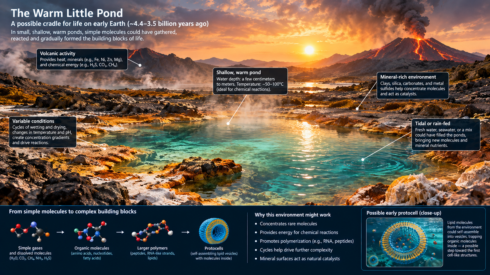

This theory of Abiogenesis was proposed by Charls Darwen. This theory speulates that Abiogenesis first started in a small pond in the early Earth. This theory is promising because a pond is small so the organic which rain down to it will lesss spread out and this fact will speed up the process of Abiogenesis to a great extint. If the starting metarials are sread out like in ocean, then the chance of reaction between them will be extremly low. But a pond is signeficantly smaller then the oceans. So eventhough the starting metarial of the early earth was extremly scarce and the reactions was unlikely

The Warm Little Pond
The pond will have carbon from the carbon dioxide and hydrogen and oxygen from water. And the nitrogen molecule can be broken by the sun rays and react with other gases to form organics and rain down in to the pond. So there is no problem with these. But phophorus is diffent. Phosphorus mainly phosphate (PO4) is attecked by calcium, which is abundent in water, forming calcium phosphate (CaPO4) which extremly stable and hard to use for organics. But the pond water is different from the ocean water. pond water usually comes from rain with much less calcium. So all the needed Elements are available in the pond.
The lipids and Amphiphiles can form from the starting metarials and if the Nucliotides from in the sky and rain down into the pond, then the phosphates, sugar formed from carbon, oxygen, hydroogen and the Nucliotides combine then RNA can form. The RNA can be assembled from the water dring from heat and rain filling if back. this process will assemble the RNA and form the first proto-cell.